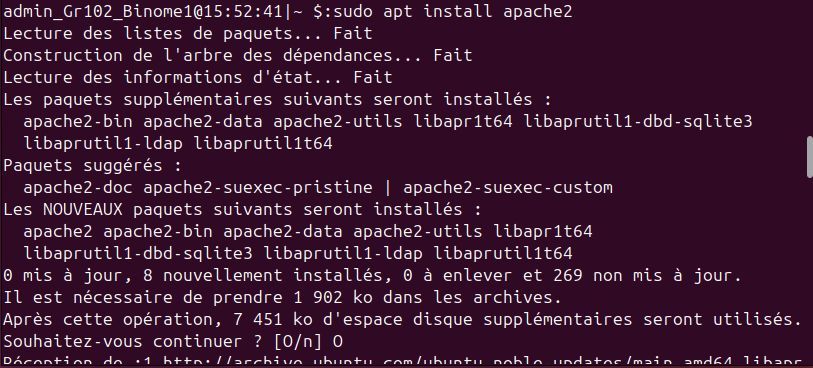
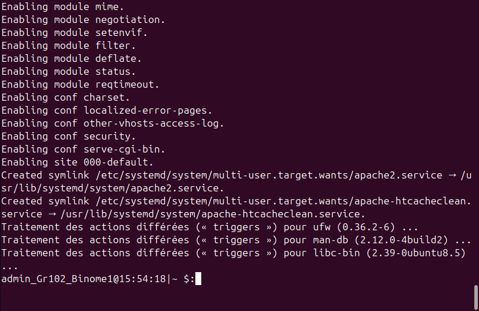
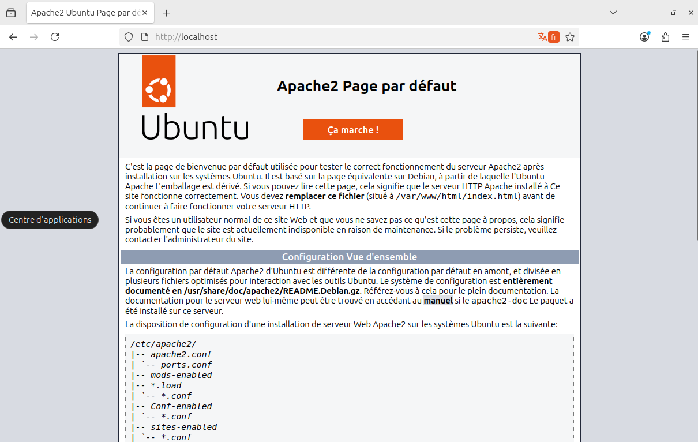

Acceuil
Création VM et SE
Administrateur et utilisateurs
Prompt
Service Web
Installation d'un service Web
On a décidé d’utiliser Apache. On exécute cette commande et on tape le mot de passe du compte administrateur :
On installe Apache :
 
Dans un navigateur, on tape http://localhost et on voit que Apache a été installé : 